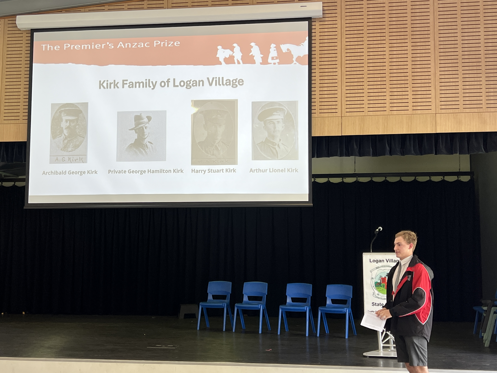

An ongoing personal research initiative documenting my family's history and preserving stories for future generations.

The project combines historical research, genealogy and archival records to understand my family's history and the wider historical context around each generation.
A permanent digital archive of stories, photographs and records for future generations.
← Back to Projects